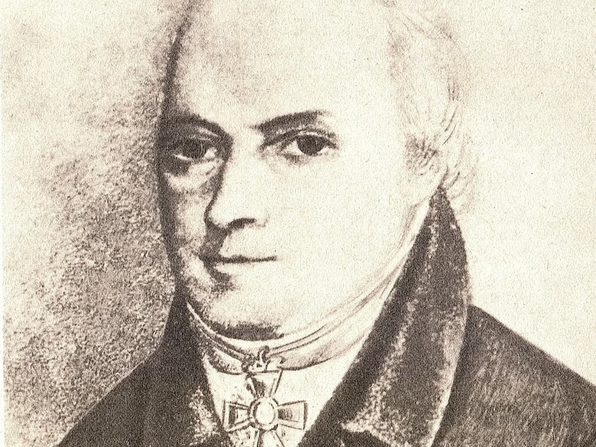

Фёдор Христофорович Граль родился 11 января 1770 в Киеве, в семье пастора. С 13 лет учился аптекарскому делу, затем окончил медико-хирургическое училище в Петербурге и защитил докторскую диссертацию в Германии. В 1797 году стал губернским врачом Перми и первые три года служил без жалования, бесплатно лечил бедных, часто на свои деньги. Его день был расписан по минутам. Вставал в пять утра, до семи принимал больных дома, потом объезжал лазареты и больницы. Особую страницу в его биографии составляет борьба с эпидемиями. В 1829-1831 годах он активно боролся с холерой, а также с оспой. Усовершенствовал методы хранения и применения вакцины, что позволило существенно снизить заболеваемость в губернии. За многолетнюю службу Граль был удостоен высоких наград: бриллиантового перстня (1807), ордена Св. Владимира 4-й степени (1811), ордена Св. Анны 2-й степени (1826) и императорской короны к этому ордену (1833). Но главной наградой была народная любовь. Ещё при жизни пермяки прозвали его «святым доктором» за безвозмездную помощь и самоотверженность.
Бессребреник-врач, бесплатно лечивший бедных; боролся с эпидемиями холеры и оспы в Пермской губернии.